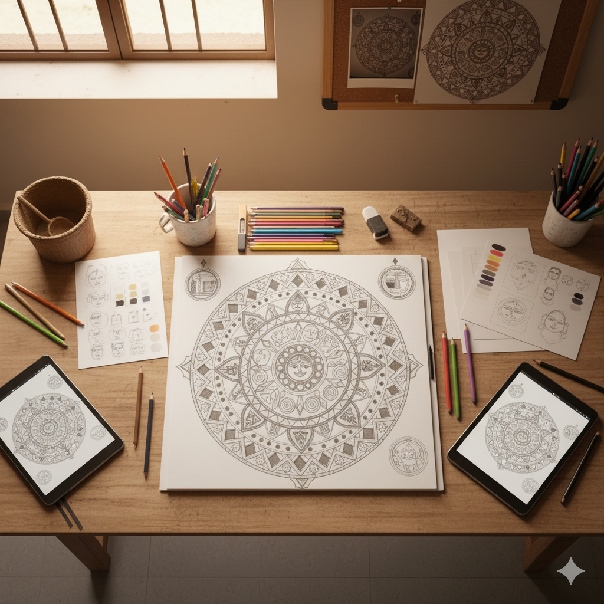
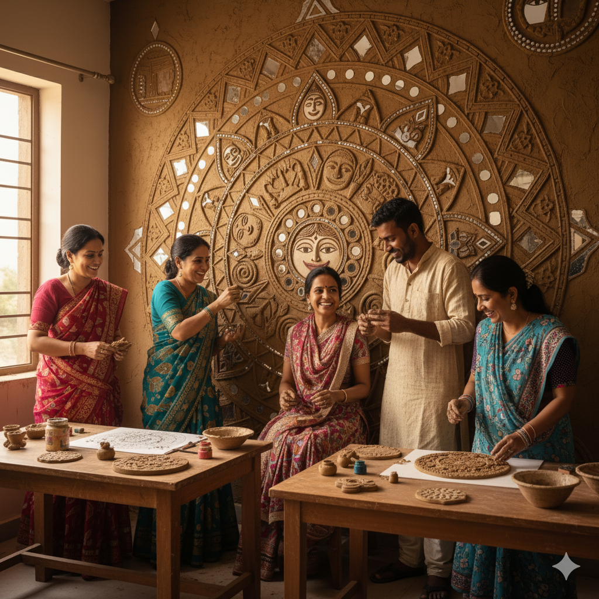
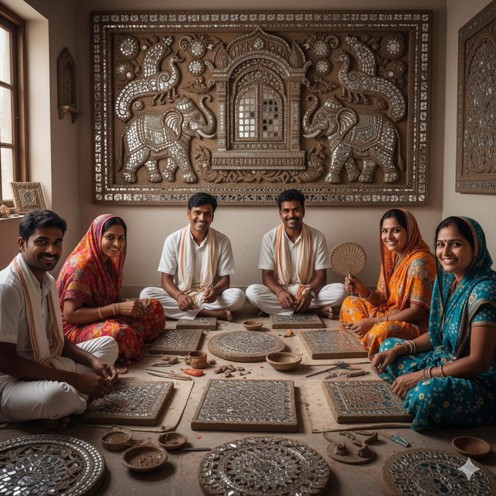

Design sketching & layout planning

Clay modeling & mirror embedding

Drying, detailing & finishing
We offer Lippan Art in any size, shape, or mirror pattern. Whether it’s for your living room, café, or studio wall—we’ll craft it just for you. Shipping is available across India. Delivery charges may vary based on location and size.
Our team of passionate artisans pour their heart into every piece. From sketch to finish, each artwork is a reflection of dedication, tradition, and soul.
Every mirror tells a story—this page invites you to find the one that reflects yours.
Shop the Collection